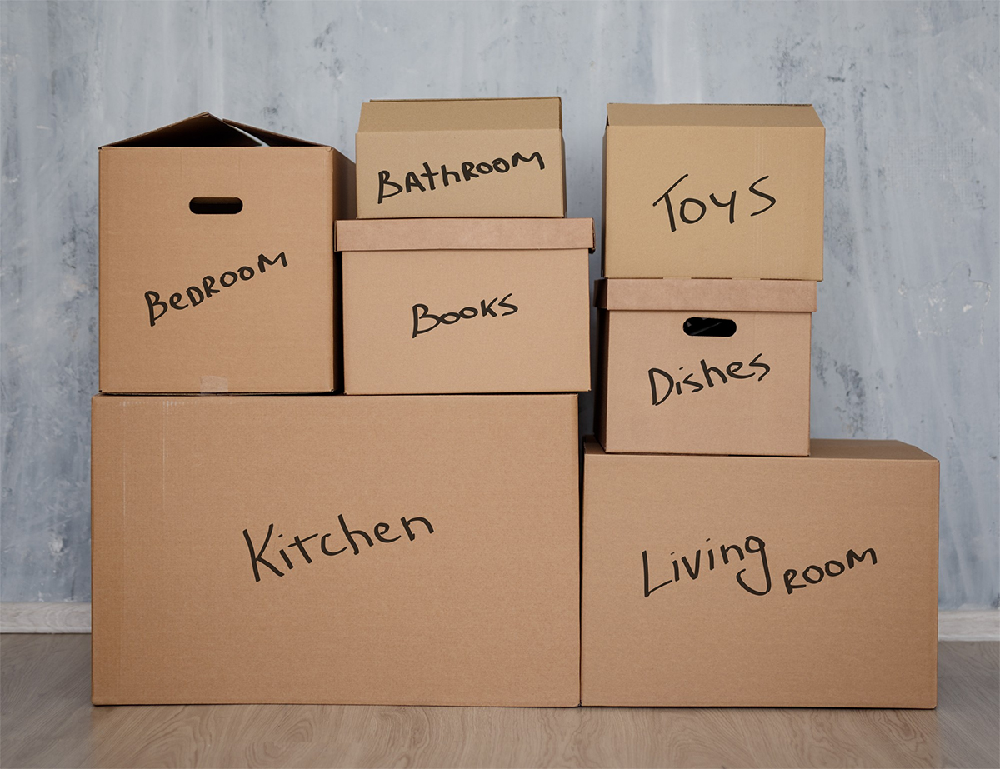

Variables#
In programming, a variable is a way to store information that can be used and changed later in your code. Think of it like a labelled box where you can put something inside, and then you can take it out or change what’s inside whenever you want.
The Basics#
Setting a variable#
In Python, this is (unnervingly) easy to do. You just pick a name for your variable, use the equals sign (=) to assign a value to it, and that’s it! Here’s an example:
# This is how you create a variable in Python
name = "Emily"
Notice that I included a comment (the line that starts with #). Comments are notes in your code that help explain what you’re doing, and they don’t affect how the code runs. You can add them anywhere in your code to make it clearer.
Within that code block we’ve created a variable called name and assigned it the value "Emily". Now, whenever you use name in your code, Python will understand that you’re referring to the value "Emily".
Using a variable#
You can use variables in your code to do all sorts of things. For example, you can print the value of a variable to the screen:
name = "Emily"
print(name)
In this case, we’ve “hardcoded” the value of the variable name to be "Emily". When you run this code, it will always print Emily.
Changing a variable#
You can also change the value of a variable at any time. Just assign a new value to it:
name = "Emily"
print(name)
name = "Alice"
print(name)
In this example, we first set name to "Emily", printed it, then changed name to "Alice", and printed it again.
Variable data types#
Variables can hold different types of data. So far, we’ve only dealt with strings (text), but variables can also hold numbers, lists, and more.
In other languages (like C) you have to specify what type of data a variable will hold when you create it, but in Python, the type is determined automatically based on the value you assign to it. Here are some common data types you might use:
Data type |
Description |
Example |
|---|---|---|
Strings |
Text data, like names or sentences. In Python, strings are enclosed in quotes (either single ‘ or double “). |
|
Integers |
Whole numbers, like 1, 2, 3, etc. |
|
Floats |
Decimal numbers, like 3.14 or 2.0. |
|
Booleans |
True or False values, often used for conditions. |
|
Lists |
A collection of items, which can be of different types. |
|
Dictionaries |
A collection of key-value pairs. |
|
You can check the type of a variable using the type() function:
name = "Emily"
age = 28
cuteness = 100.0
is_beautiful = True
print(type(name))
print(type(age))
print(type(cuteness))
print(type(is_beautiful))
You can even change the type of a variable by assigning it a new value of a different type:
variable = "I am a string"
print(type(variable))
variable = 42
print(type(variable))
This is called “dynamic typing,” and it’s one of the features that makes Python flexible and easy to use. At the same time, it means you need to be careful about how you use variables, since their type can change. This can be bad for a few reasons:
It can lead to bugs if you accidentally change a variable’s type and then try to use it in a way that doesn’t make sense for that type.
It can slow down your code, since Python has to figure out the type of each variable at runtime.
…but it’s a trade-off that many programmers find worth it for the ease of use and flexibility that dynamic typing provides.
Operations on variables#
You can perform various operations on variables depending on their data type. Let’s talk through some of the common operations you might want to do with different types of variables.
Strings#
You can concatenate (join) strings using the + operator:
first_name = "Emily"
last_name = "O'Connor"
full_name = first_name + " " + last_name
print(full_name)
You can also repeat strings using the * operator:
laugh = "ha"
laughter = laugh * 3
print(laughter)
You can convert a string to a number (if it represents a valid number) using the int() or float() functions:
age_str = "28"
age_int = int(age_str)
print(age_int)
pi_str = "3.14"
pi_float = float(pi_str)
print(pi_float)
This can be particularly useful when you’re getting input from users, since input is usually received as a string.
user_input = input("Enter your age: ")
age = int(user_input)
print("You are", age, "years old.")
Numbers#
You can perform arithmetic operations on numbers as you might expect (you’ll never need a calculator again!):
a = 10
b = 3
addition = a + b
subtraction = a - b
multiplication = a * b
division = a / b
floor_division = a // b
modulus = a % b
power = a ** b
print("Addition:", addition)
print("Subtraction:", subtraction)
print("Multiplication:", multiplication)
print("Division:", division)
print("Floor Division:", floor_division)
print("Modulus:", modulus)
print("Power:", power)
Lists#
You can add items to a list using the append() method:
fruits = ["apple", "banana"]
fruits.append("cherry")
print(fruits)
You can also access items in a list using their index:
fruits = ["apple", "banana", "cherry"]
first_fruit = fruits[0]
print(first_fruit)
Notice that the index starts at 0, so fruits[0] gives you the first item in the list. This is called “zero-based indexing.” and it’s a common convention in programming languages.
Practice#
Time for some practice! Try creating your own variables of different types and performing some operations on them. Experimenting is a great way to learn!
You can check out the greeting problem in the Problems section to apply what you’ve learned about variables in a practical scenario.